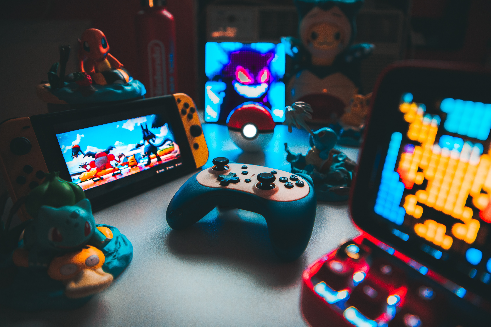

NintenBlog: ¡el mejor blog de Nintendo que no está en Internet!
Animal Crossing y por qué es el mejor
En el tranquilo pueblo de Animal Crossing, los corazones encuentran un refugio donde la amabilidad y la imaginación son las monedas más valiosas. Este juego, que ha capturado los corazones de millones, no es solo un simple pasatiempo; es un oasis digital donde los sueños se hacen realidad y las conexiones humanas florecen.
El juego Animal Crossing ha ganado popularidad y ha sido
elogiado por varias razones:
Experiencia Relajante: Animal Crossing ofrece una
experiencia de juego relajante y sin prisas. No hay metas
obligatorias ni límites de tiempo, lo que permite a los jugadores
disfrutar del juego a su propio ritmo.
Interacción Social: El juego fomenta la interacción social
tanto dentro del juego con los adorables personajes animales como
fuera del juego, ya que los jugadores pueden visitar los pueblos
de sus amigos y compartir experiencias.
Creatividad y Personalización: Los jugadores pueden
personalizar su pueblo, su hogar, su ropa y más. Esta capacidad
para expresar la creatividad y tener un impacto en el mundo del
juego es muy atractiva.
Eventos en Tiempo Real: Animal Crossing sigue un reloj
interno y un calendario del mundo real. Presenta eventos
especiales basados en estaciones y festividades reales, lo que
crea un ambiente inmersivo y dinámico.
Coleccionismo y Exploración: Los jugadores pueden
coleccionar insectos, peces, fósiles y arte. Esto fomenta la
exploración y el aprendizaje sobre diversas especies, lo que
resulta educativo y emocionante.
Comunidad Activa: La comunidad de jugadores de Animal
Crossing es muy activa. Los jugadores comparten diseños, ideas y
experiencias, lo que crea un sentido de comunidad y pertenencia.
El simple placer de gastar todo tu dinero
¿No es maravilloso que tengamos el poder de gastar en lo que realmente nos hace felices? Cuando invertimos en Nintendo, no estamos comprando solo un simple objeto; estamos invirtiendo en algo más grande. Estamos invirtiendo en momentos de risas compartidas con amigos, en la emoción de superar desafíos y en la alegría de explorar mundos mágicos.
Cómo completar la Pokedex arruinó mi cordura

Me llamo Alex,tengo 28 años, soy apasionado por los videojuegos desde mi infancia. Un día, cuando Pokémon Go se convirtió en un fenómeno mundial, me lancé de cabeza al mundo de los Pokémon en realidad aumentada. Estaba decidido a completar la Pokedex y convertime en el mejor entrenador Pokémon que jamás hubiera existido. Al principio, salir a explorar el mundo real en busca de criaturas virtuales fue emocionante. Caminaba por parques, calles y plazas, cazando Pokémon con su teléfono en mano. Sin embargo, con el tiempo, mi emoción se convirtió en obsesión. Me encontraba levantándose a altas horas de la noche para atrapar Pokémon, ignorando las llamadas de mis amigos y desapareciendo durante horas en mi búsqueda incansable.